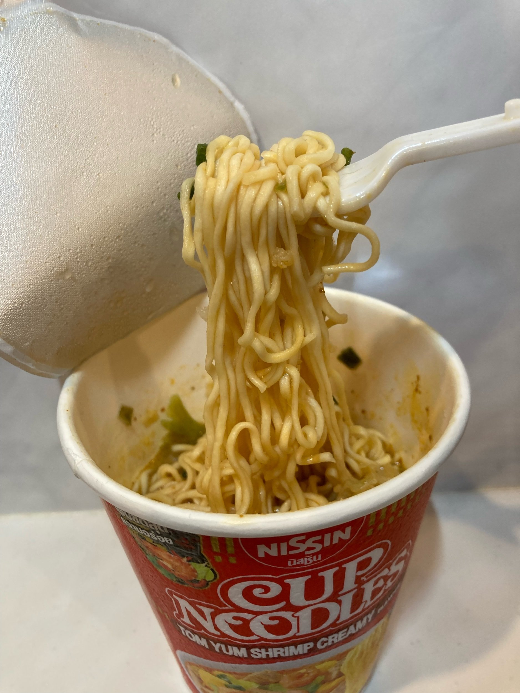

insert your favorite brand ramen cup
mmm..salt

What you need:
- A bank account with at least $1.50 in it
- a fork
- a method of boiling water
How to make:
- Remove plastic wrapping from cup
- Boil water
- Open ramen cup paper lid halfway
- Pour boiling water 3/4ths of cup volume
- place fork on top of paper lid, closing it
- Sit and think about your day
- Get whatever toppings you like (boiled egg, sriracha, beans - don't knock it till you try it, etc)
- Make sure you have water close by for the amount of sodium you're about to consume
Enjoy your cup noodles!